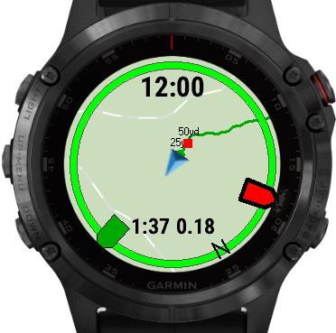
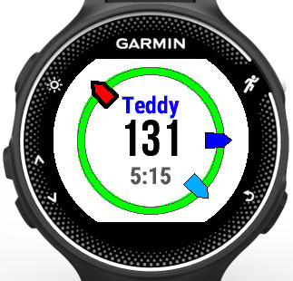
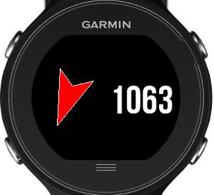

|  |
Dog Tracker Plus
MapsDog trails Activity Recording compatibility: most Fenix5 devices, VA3, FR935, FR945, MARQ Connect IQ store |
|  |
Dog Tracker App
upto 20 dogsworks with most older devices. See Dog Tracker Plus for newest devices. Connect IQ store |
|  |
Dog Tracker Field
Use with any activity Works with most Garmin devices that support CIQ Connect IQ store |